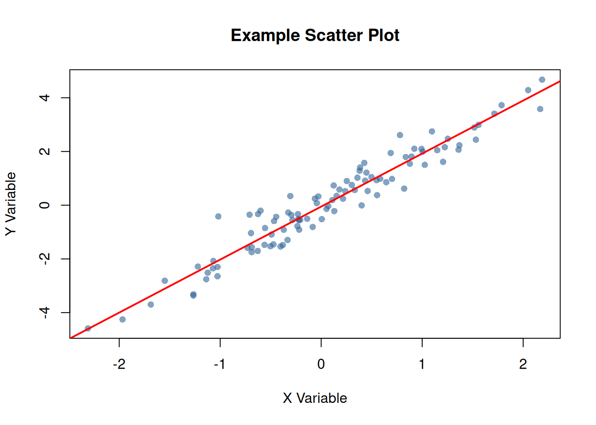
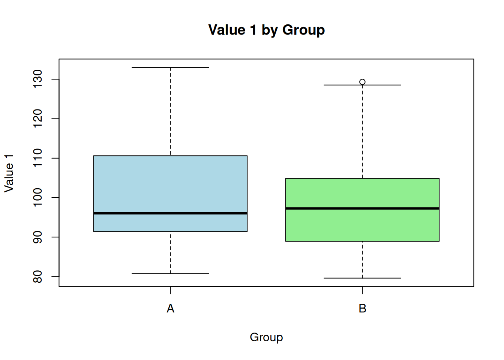

Code
library(ettbc)2026-06-18
library(ettbc)This article demonstrates advanced features of Quarto for package documentation. Unlike vignettes, articles are only available on the documentation website and are not included in the package bundle.
Vignettes should be used for:
Articles are better for:
Quarto makes it easy to create cross-references. For example, see Figure 1 for a scatter plot and Table 1 for a summary table.
# Generate sample data
set.seed(123)
x <- rnorm(100)
y <- 2 * x + rnorm(100, 0, 0.5)
# Create scatter plot
plot(x, y,
main = "Example Scatter Plot",
xlab = "X Variable",
ylab = "Y Variable",
pch = 16,
col = rgb(0.2, 0.4, 0.6, 0.6))
abline(lm(y ~ x), col = "red", lwd = 2)
data_summary <- data.frame(
Statistic = c("Mean", "Median", "SD", "Min", "Max"),
X = c(mean(x), median(x), sd(x), min(x), max(x)),
Y = c(mean(y), median(y), sd(y), min(y), max(y))
)
knitr::kable(data_summary, digits = 3)| Statistic | X | Y |
|---|---|---|
| Mean | 0.090 | 0.127 |
| Median | 0.062 | 0.137 |
| SD | 0.913 | 1.865 |
| Min | -2.309 | -4.586 |
| Max | 2.187 | 4.675 |
As shown in Table 1, the variables have similar distributions.
You can make code chunks foldable:
# Prepare more complex data
complex_data <- data.frame(
id = 1:50,
group = rep(c("A", "B"), each = 25),
value1 = rnorm(50, 100, 15),
value2 = rnorm(50, 50, 10)
)
# Calculate group statistics
group_stats <- aggregate(
cbind(value1, value2) ~ group,
data = complex_data,
FUN = function(x) c(mean = mean(x), sd = sd(x))
)
print(group_stats)
#> group value1.mean value1.sd value2.mean value2.sd
#> 1 A 101.61247 14.63952 51.727220 10.047051
#> 2 B 98.13191 13.84514 53.261796 8.934998
#> id group value1 value2
#> Min. : 1.00 Length :50 Min. : 79.60 Min. :32.43
#> 1st Qu.:13.25 N.unique : 2 1st Qu.: 89.29 1st Qu.:46.76
#> Median :25.50 N.blank : 0 Median : 96.64 Median :51.04
#> Mean :25.50 Min.nchar: 1 Mean : 99.87 Mean :52.49
#> 3rd Qu.:37.75 Max.nchar: 1 3rd Qu.:107.93 3rd Qu.:59.34
#> Max. :50.00 Max. :132.98 Max. :72.93#> id group value1 value2
#> 1 1 A 132.98216 46.24397
#> 2 2 A 119.68619 44.38124
#> 3 3 A 96.02282 46.56083
#> 4 4 A 108.14791 50.90497
#> 5 5 A 93.78490 65.98509
#> 6 6 A 92.85630 49.11435
#> 7 7 A 88.17096 60.80799
#> 8 8 A 91.08074 56.30754
#> 9 9 A 124.76361 48.86360
#> 10 10 A 99.18958 34.67098When using this package in production:
Large datasets may require additional memory and processing time.
Left Column
This demonstrates a two-column layout in Quarto.
Right Column
You can place different content in each column.

Here’s how to use the package’s example function with different inputs:
# Numeric vector
example_function(c(5, 10, 15, 20, 25))
#> [1] 15
# Using with generated data
random_data <- runif(10, min = 0, max = 100)
example_function(random_data)
#> [1] 47.42519Quarto supports code annotations for detailed explanations:
Quarto excels at mathematical notation. Here’s an example of a statistical formula:
The standard error of the mean is calculated as:
\[ SE = \frac{s}{\sqrt{n}} \]
where \(s\) is the sample standard deviation and \(n\) is the sample size.
For a confidence interval:
\[ CI = \bar{x} \pm t_{\alpha/2, n-1} \cdot SE \]
Click to expand this section for additional tips:
This article demonstrates the advanced capabilities of Quarto for creating rich, interactive documentation for R packages.